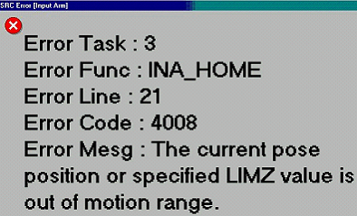

Service History
Subject: NS-6040 INA_HOME Errror 4008
Handler Model: NS-6040
Controller: SRC520
Date: 4 Feb 2010
Symptom
Regarding for S9.10-SAS software has a problem.
Please see Mr. Ang of ASE_S report as follows;
2. Software Issues / Concern
NS6040
1. Current software S9.10-SAS having "bug" as in NO alarm / error message is prompt when
Input arm is out of specified range as been witnessed on handler during meeting. Handler
MMI showing "PAUSE". No response from all button except "power off" button on control panel when pressed.

Status : KG Singapore to feedback to Epson and update ASESG by 13th Feb 10.
I have received the reason and countermeasure.
Reason: Some of the value is not correct on the SPEL.
Countermeasure:
Select [SPEL]/[Programming Mode]/[System Monitor Window]/[Backup Variable] tab B_ONERR_EXE This value change from 0 to -1.
Action
Tried out as per Hidaka's request to change value from 0 to -1 in [SPEL]/[Programming Mode]/[System Monitor Window]/[Backup Variable] tab B_ONERR_EXE.
Simulated condition and verified error message "The current pose position or specified LIMZ value is out of motion range" appear in MMI screen.
Request customer to fan out to the rest of the NS-6040 handlers.
Cause